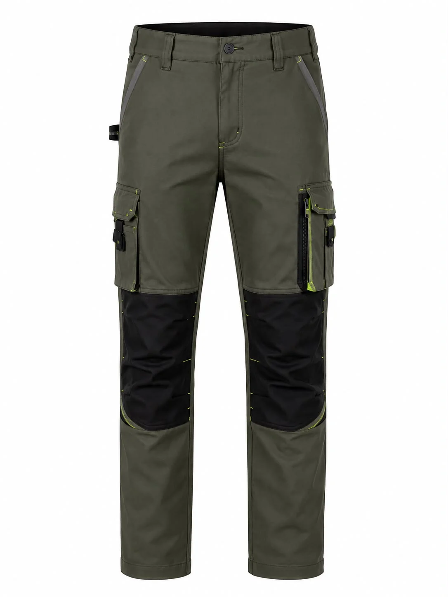

Örnek çözüm senaryosu
Fabrika ve Üretim Ekibi
İhtiyaç: Günlük kullanıma, hareketli vardiya düzenine ve kurumsal renk standardına uyumlu bir ekip görünümü.
Ürün yaklaşımı: İş pantolonu, polo yaka tişört ve mevsime göre polar veya softshell katmanı birlikte planlanabilir.
Uygulama: Bölüm bazlı renk ayrımı, göğüs nakışı ve beden dağılımı numune onayından sonra kesinleştirilir.
İş pantolonu seçeneklerini inceleyin →